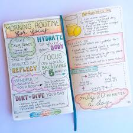

cotton.and.ribbon czyli twórcza strona Renaty Kosiaty - Strona Domowa
Kim jestem?
Jestem kobietą, matką, anglistką, która kocha tworzyć. W aspekcie zawodowym, w tym momencie swojego życia, nie chcę wracać na swoją utartą ścieżkę. Znam to, obwąchałam różne kąty, wiem czym śmierdzą. Znudziło mnie to. A, że lubię chadzać swoimi
drogami i sama lubię je sobie udeptywać, to też wpadłam na pomysł połączenia dwóch interesujących mnie dziedzin: działalności twórczej i technologii. W momencie, w którym to czytasz, ja, w bliżej nieokreślonej przeszłości, zaczynam tworzyć
własną przestrzeń w internecie. Serdecznie witam Cię w moim świecie! Mam nadzieję, że znajdziesz tutaj coś wartościowego dla siebie.
Na co dzień opiekuję się dwójką małych dzieci, Hanką i Kazkiem. Tworzę rękodzieło: szyję patchworki,
uczę się szyć ubrania, dziergam. Eksperymentuję artystycznie w wielu dziedzinach: próbuję rysować, namietnie robię zdjęcia telefonem i nagrywam filmiki. Interesuję się typografią i projektowaniem graficznym. Skupiam się mocno na aspekcie
wizualnym i użytecznym wszystkiego co tworzę. Bawię się kolorem i kształtem. Poza tym, ciekawi mnie budowanie i kreowanie wizerunku w przestrzeni internetowej i mediach społecznościowych. Marketing digitalowy też mnie nęci, a w szczególności
content marketing. Uprawiam jogę i zagłębiam się w wiedzę dotyczącą samorozwoju, rozwoju świadomości i rozwoju duchowego. I jeszcze myślenie wizualne się przewija. Dużo tego, prawda? Taka jestem - otwarty, chłonny umysł. Zawsze się uczę.
Zawsze chcę doświadczać w stu procentach. Czasami to boli, ale ból i starch są czymś, co mamy integrować w sobie, aby żyć pełnią życia. A tutaj będzie miejsce opowiadania innym o moich doświadczeniach, z nadzieją, że moje odbyte lekcje
komuś ułatwią ich włąsną drogę. Jeszcze raz serdecznie witam Cię na moim szlaku! Cieszę się, że choć chwilę mi potowarzyszysz. A może zostaniesz na dłużej? Z pewnością czegoś się od siebie nauczymy. Ile? To już zależy tylko od nas. Zabierz
stąd co tylko zechcesz i dzielnie podążaj swoim torem!
Dziennik
Po co ja piszę ten dziennik?
Pytam o to samą siebie. Z pewnością będę go tworzyć dla samej siebie. Jestem człowiekiem, który bardziej ceni podróż i drogę do celu, aniżeli napawa się dumą z jego osiągnięcia. Tak więc, tutaj będę tworzyć rekord własnych twórczych, i nie tylko twórczych, podróży. Chciałabym też przedstawiać tutaj podróże innych, podobnych mi, kobiet. W tym momencie nie do końca wiem jak dokładnie będzie to wyglądało, jaką formę to przybierze. Z pewnością chcę opowiadać o ludziach, których twórczość lub historie łapią mnie za serce. Z pewnością znajdę sposoby na przekazanie Wam takich treści.
Po co ja uczę się frontendu?
Frontend to taka działka w branży IT, która skupią się wokół wyglądu różnego rodzaju aplikacji / programów komputerowych. Słowo WYGLĄD jest tutaj kluczowe. To jest to, przy czym ja lubię bardzo majstrować. Dochodzi do tego jeszcze aspekt interakcji użytkownika z danym produktem. I dla mnie, to jest jak z tworzeniem quiltu (narzuty, kołdry, kocyka czy jakby to tam nazwać po polsku). Najpierw jest wymyślanie i szycie topu czyli samego patchworku, który będzie pobudzał oko użytkownika. Potem jest praca nad innymi warstwami, które sprawiają, że kontakt z takim uszytkiem / produktem jest przyjemny. Opanowanie podstaw frontendu pozwala mi budować i stylować tą oto właśnie stronę www tak jak mi się to żywnie podoba. Mam wpływ na wszystko co sie tutaj dzieje, zarówno na powierzchni jak i pod nią. Oraz na to, jak Tobie użytkuje się tą stronę i jak odbierasz ją na poziomie wizualnym.
Jak się uczę frontendu?

Generalnie zaczęłam od czytania o branży IT w Internecie. Szukałam treśći tworzonych przez kobiety pracujące w tej branży. A najbardziej interesowały mnie osoby takie jak ja - matki, które chcą się przebranżowić.
Przejdź do artykułu o mojej nauce frontendu